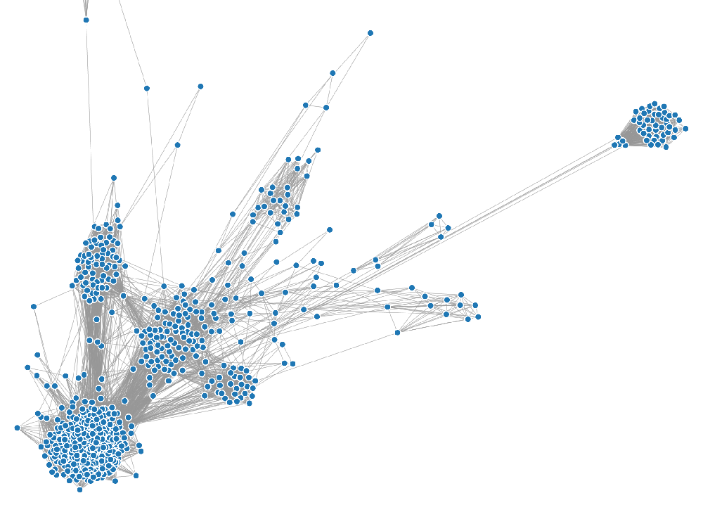
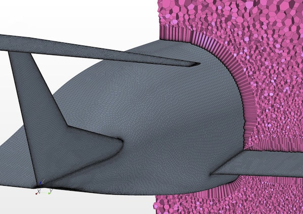
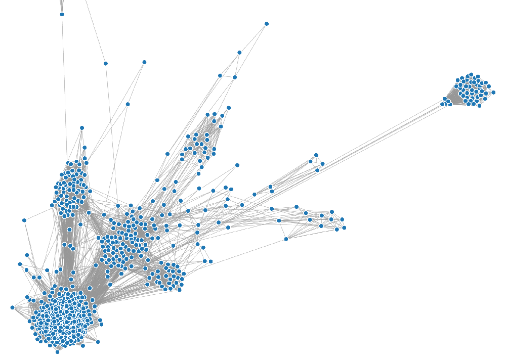
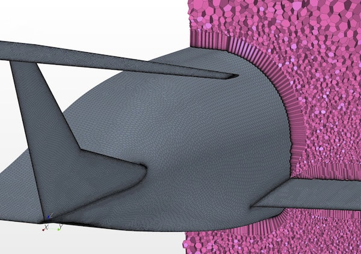

About
Hi! My name is Sean, and I'm a first-year grad student at MIT's department of Nuclear Science and Engineering. I'm excited about research in nuclear fusion, data science, and aerospace engineering. As an undergrad at Columbia University, I studied Applied Physics with a minor in Computer Science.
This website is a repository for cool stuff and projects I'm working on. I made it a few years ago to get better with Python and CSS. Its pages are generated from Markdown files.
Here are some images from my favorite projects to date:
 



November 2013.